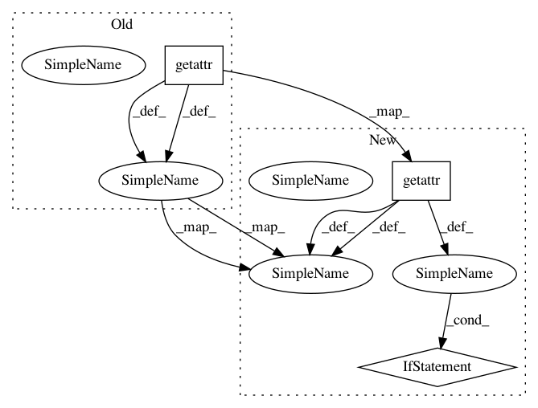

3d88525fe7d64e5ed3c4e8a5056a6d0dd8224300,debug_toolbar/middleware.py,DebugToolbarMiddleware,process_request,#DebugToolbarMiddleware#,73
Before Change
def process_request(self, request):
if self.show_toolbar(request):
if self.override_url:
original_urlconf = getattr(request, "urlconf", settings.ROOT_URLCONF)
debug_toolbar.urls.urlpatterns += patterns("",
("", include(original_urlconf)),
)
self.override_url = False
After Change
def process_request(self, request):
if self.show_toolbar(request):
if self.override_url:
original_urlconf = __import__(getattr(request, "urlconf", settings.ROOT_URLCONF), {}, {}, ["*"])
debug_toolbar.urls.urlpatterns += patterns("",
("", include(original_urlconf)),
)
if hasattr(original_urlconf, "handler404"):
debug_toolbar.urls.handler404 = original_urlconf.handler404
if hasattr(original_urlconf, "handler500"):
debug_toolbar.urls.handler500 = original_urlconf.handler500
self.override_url = False
request.urlconf = "debug_toolbar.urls"
In pattern: SUPERPATTERN
Frequency: 3
Non-data size: 3
Instances
Project Name: jazzband/django-debug-toolbar
Commit Name: 3d88525fe7d64e5ed3c4e8a5056a6d0dd8224300
Time: 2011-04-18
Author: dcramer@gmail.com
File Name: debug_toolbar/middleware.py
Class Name: DebugToolbarMiddleware
Method Name: process_request
Project Name: has2k1/plotnine
Commit Name: f2435e3ac209629cfd89ddbd94826f8cf0db9aa5
Time: 2020-06-01
Author: has2k1@gmail.com
File Name: plotnine/geoms/annotation_stripes.py
Class Name: _geom_stripes
Method Name: draw_group
Project Name: jazzband/django-debug-toolbar
Commit Name: 1ba439bff713560b0aa5340bd25c57bdc8152d5f
Time: 2011-04-25
Author: dcramer@gmail.com
File Name: debug_toolbar/middleware.py
Class Name: DebugToolbarMiddleware
Method Name: process_request